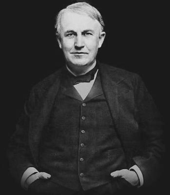

La patria esta con nosotros
"Sostenemos estas verdades como evidentes, que todos los hombres son creados iguales."
La importancia de estados unidos
Es líder en tecnología y avances científicos, desarrollando productos e investigaciones que han transformado industrias y mejorado la calidad de vida en todo el mundo.
- Sistema Político: Es una república federal con un sistema democrático basado en tres poderes: ejecutivo, legislativo y judicial.
- Economía Potente: Es la economía más grande del mundo, destacándose en tecnología, finanzas, industria, y servicios.
- Territorio Extenso y Diverso: Con 50 estados, su geografía abarca desde desiertos y montañas hasta costas y grandes llanuras.
- Poder Militar: Posee una de las fuerzas armadas más grandes y avanzadas del mundo, con una amplia red de bases internacionales.
HISTORIA Y FORMACIÓN DE LOS ESTADOS UNIDOS
Una nación construida sobre la libertad, la igualdad y la búsqueda de oportunidades.
Descubre los hitos que definieron su desarrollo y transformación.
Declaración de Independencia
El 4 de julio de 1776, las 13 colonias declararon su independencia del Reino Unido, marcando el nacimiento de una nueva nación.
Constitución
Ratificada en 1787, la Constitución de los Estados Unidos estableció el marco para un gobierno federal basado en principios democráticos.
Guerra Civil
Entre 1861 y 1865, Estados Unidos enfrentó un conflicto interno sobre la esclavitud y los derechos estatales, que culminó en la abolición de la esclavitud.
Expansión Territorial
Con la Compra de Luisiana en 1803 y otras adquisiciones, Estados Unidos extendió sus fronteras desde el Atlántico hasta el Pacífico.
Revolución Industrial
A finales del siglo XIX, Estados Unidos se convirtió en una potencia industrial, liderando innovaciones en tecnología y manufactura.
Guerras Mundiales
La participación en las dos Guerras Mundiales consolidó a Estados Unidos como una superpotencia económica y militar global.
Derechos Civiles
Durante las décadas de 1950 y 1960, líderes como Martin Luther King Jr. lucharon por la igualdad racial y la justicia social.
Era Espacial
En 1969, los Estados Unidos lograron un hito histórico al llevar al hombre a la Luna, marcando un avance en la exploración espacial.
VIVE TU MISMO LA EXPERENCIA DE SU MARAVILLOSA HISTORIA
Explora los momentos clave y proyectos históricos que han definido el desarrollo de los Estados Unidos.
Desde su independencia en 1776 hasta su rol como líder mundial, los Estados Unidos han tenido un impacto significativo en la historia global.
CULTURA DE ESTADOS UNIDOS
"El Sueño Americano es ese sueño de una tierra en la que la vida debería ser mejor, más rica y más plena para todos, con oportunidades para cada uno según su habilidad o logro."
{kind=link}
{kind=link}
{kind=link}
{kind=link}
{kind=link}
{kind=link}
Opiniones de los personajes mas celebres de Estados Unidos
Barack Obama
"En los Estados Unidos, nuestra diversidad es nuestra mayor fortaleza. Somos una nación de inmigrantes, y ese espíritu de inclusión e innovación es lo que ha convertido a este país en un faro de esperanza para las personas de todo el mundo."
Oprah Winfrey
"Los Estados Unidos son la tierra de las oportunidades. Yo venía de la nada, y pude construir mi propio imperio a través del trabajo duro y la determinación. América es un lugar donde los sueños se hacen realidad."

Martin Luther King Jr.
"Tengo un sueño de que un día esta nación se levantará y vivirá el verdadero significado de su credo: 'Sostenemos que estas verdades son evidentes, que todos los hombres son creados iguales.'"

Thomas Edison
"Descubro lo que el mundo necesita. Luego, voy adelante e intento inventarlo. En los Estados Unidos, siempre hay una oportunidad para la innovación, para crear algo nuevo. América es la tierra de las ideas y el progreso."

Walt Disney
"Los Estados Unidos siempre han sido una tierra de posibilidades. Fue aquí donde pude construir un sueño desde cero. América me enseñó a no dejar de soñar y a siempre seguir adelante."
Siguenos en nuestras redes sociales
Esta pagina web demiestra el valor patriotico de estados unidos